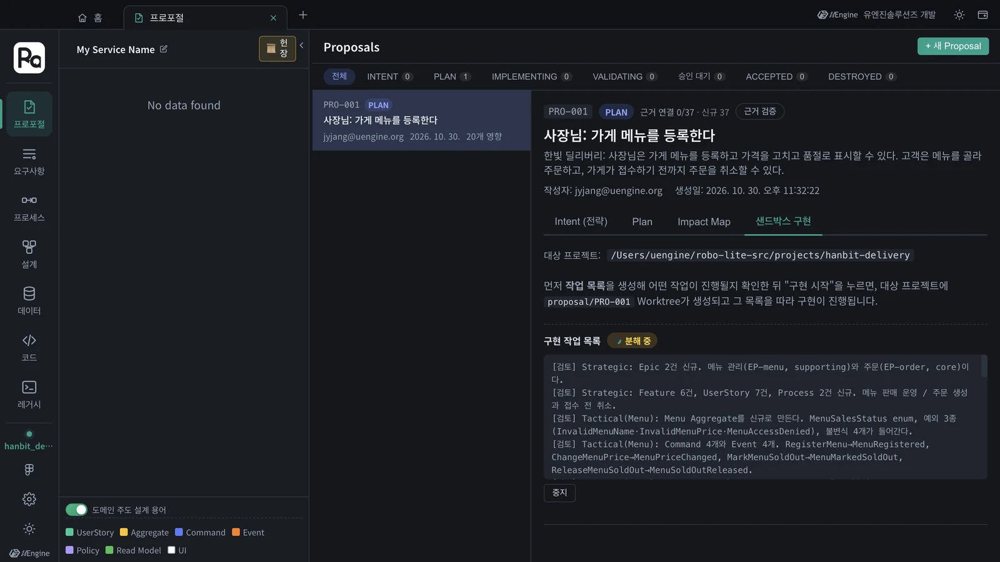
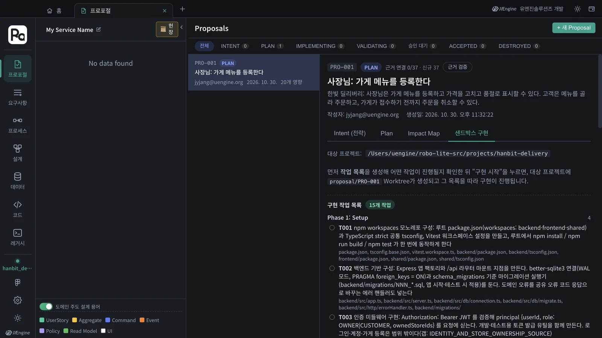
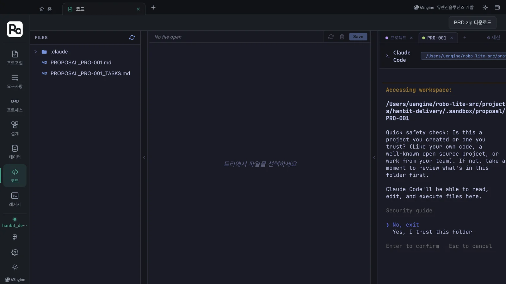
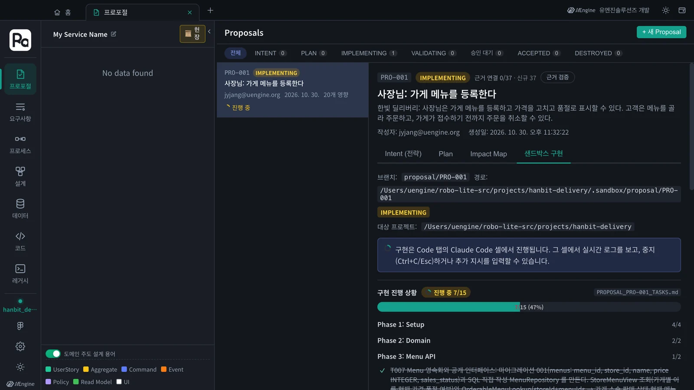
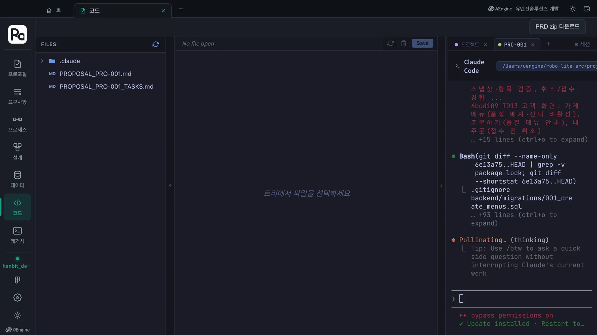
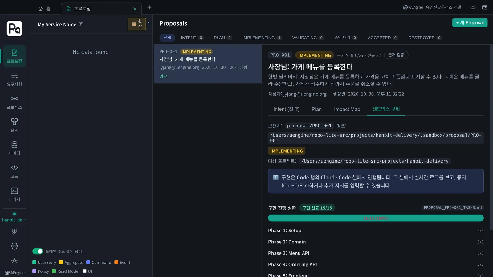

확정된 Plan을 작업 목록으로 쪼개고, 코드 탭의 Claude Code 셀이
/robo-implement로 그 목록을 하나씩 구현합니다. 구현은 본체가 아니라proposal/PRO-001가지의 워크트리(샌드박스)에서 이루어지고, 작업 하나가 끝날 때마다 커밋이 쌓입니다. 이 튜토리얼에서는 작업 15개가 약 22분 걸렸습니다.
무엇이 일어나나#
- 작업 목록 — Plan(5장)을
robo-proposal-tasks스킬이 Phase별 체크리스트로 바꿉니다. 작업마다 만들 파일 경로가 붙습니다. - 샌드박스 — 대상 프로젝트 폴더 안
.sandbox/proposal/PRO-001에 git 워크트리를 만들고proposal/PRO-001가지에서 일합니다. 본체 코드는 수락(7장) 전까지 그대로입니다. - Claude Code 셀 — 코드 탭 오른쪽 터미널에서 내 PC의 Claude Code가
/robo-implement PRO-001을 실행합니다. 작업을 끝낼 때마다PROPOSAL_PRO-001_TASKS.md의 체크박스를 채우고 커밋합니다. - 진행 상황 — 프로포절의 「샌드박스 구현」 칸이 그 체크박스를 읽어 진행 막대와 Phase별 수를 보여 줍니다.
따라 하기 1 — 작업 목록 만들기#
- Plan을 확정한
PRO-001에서 샌드박스 구현 칸을 엽니다. 대상 프로젝트가 홈에서 고른 코드 폴더(…/projects/hanbit-delivery)인지 확인합니다. - 작업 목록 생성을 누릅니다. Claude Code가 Plan을 읽고 Phase별 작업을 씁니다. 이 튜토리얼에서는 약 1분 반 걸렸습니다. 결과를 읽지 못했다는 오류가 나면 다시 누릅니다(이번에도 세 번째에 됐습니다).
- 구현 작업 목록 · 15개 작업이 나옵니다. 작업마다 설명과 만들 파일이 붙어 있습니다. 마음에 들지 않으면 작업 목록 재생성을 누릅니다.


이번 작업 목록의 Phase는 여섯 개였습니다.
| Phase | 작업 | 무엇 |
|---|---|---|
| 1 Setup | T001~T004 | 모노레포(backend · frontend · shared), Express + SQLite 기반, JWT 인증 미들웨어, shared/의 zod API 계약 |
| 2 Domain | T005~T006 | Menu · Order 애그리거트와 불변식(Express · SQLite 비의존) |
| 3 Menu API | T007~T008 | 메뉴 영속화, 공개 인터페이스 OrderableMenuLookup, 메뉴 라우트 |
| 4 Ordering API | T009~T010 | 주문 영속화(조건부 갱신), 주문 생성 · 접수 · 취소 라우트 |
| 5 Frontend | T011~T013 | React 앱 뼈대, 사장님 화면, 고객 화면 |
| 6 Test | T014~T015 | 도메인 불변식 테스트, API 통합 테스트 |
5장 Plan의 결정이 그대로 작업이 된 것을 볼 수 있습니다 — 예를 들어 T010은 「Menu 공개 인터페이스 OrderableMenuLookup만 호출해 품절을 검증하고 menus 테이블은 직접 접근하지 않는다」고 적혀 있습니다(헌장 원칙 I).
따라 하기 2 — 구현 시작#
- 구현하기를 누릅니다. 앱이 워크트리와
proposal/PRO-001가지를 만듭니다. 대상 폴더가 Git 저장소가 아니면 「git init 후 계속」할지 묻습니다. - Claude Code 셀로 이동을 누릅니다. 코드 탭이 열리고 오른쪽에 PRO-001 셀이 생깁니다.
- 처음이면 Claude Code가 두 가지를 묻습니다. 셀을 눌러 화살표로 고르고 Enter를 누릅니다.
① 폴더 신뢰 — 「Yes, I trust this folder」(기본값은 「No, exit」이니 꼭 아래로 옮겨서)
② 권한 우회 모드 동의 — 「Yes, I accept」(구현 중 파일 쓰기 · 명령 실행을 하나하나 묻지 않게 함) - 두 확인에 답하면 앱이
/robo-implement PRO-001을 셀에 넣어 구현이 시작됩니다. 확인 창이 떠 있는 동안에는 명령을 넣지 않고 기다립니다.

두 확인은 처음 한 번만
폴더 신뢰와 권한 우회 동의는 Claude Code 자체의 안전장치라서 Robo Architect가 대신 누르지 않습니다. 한 번 답하면 기억되어, 같은 폴더 · 같은 PC에서는 다시 묻지 않습니다. 권한 우회는 샌드박스 워크트리 안에서만 일하는 구현 셀에 맞춘 설정입니다 — 본체 코드는 수락 전까지 바뀌지 않습니다.
따라 하기 3 — 진행 지켜보기#
셀에서는 Claude Code가 파일을 읽고 쓰고, npm install · 테스트 · git commit을 하는 모습이 그대로 보입니다. 프로포절 탭으로 돌아가면 진행 막대가 보입니다.

- 진행 막대 · Phase별 수 — 셀이
PROPOSAL_PRO-001_TASKS.md의 체크박스를 채울 때마다 갱신됩니다. - 「정체 — N분 업데이트 없음」 — 체크박스가 오래 안 바뀌면 붙습니다. 셀을 열어 Claude가 무엇을 기다리는지(질문, 오류) 확인합니다.
- 멈추기 · 추가 지시 — 셀에서 Ctrl+C 또는 Esc로 멈추고, 이어서 지시를 입력할 수 있습니다.
- 미구현부분 완료하기 — 작업이 남았는데 더 진행하지 않을 때, 지금까지 된 것으로 검증(7장)으로 넘어갑니다. 남은 작업을 마저 시키려면 셀에서 이어서 지시합니다.

이 튜토리얼에서는 확인 창에 답한 뒤 약 22분 만에 15개 작업이 모두 끝났습니다.

결과 — 무엇이 생겼나#
proposal/PRO-001 가지에 작업마다 커밋이 하나씩, 모두 15개 쌓였습니다(T001 npm workspaces 모노레포 구성 … T015 API 통합 테스트). 잠금 파일을 빼면 69개 파일, 3,622줄입니다.
backend/src/modules/menu/ 메뉴 애그리거트 · 저장소 · 서비스 · 라우트
backend/src/modules/ordering/ 주문 애그리거트 · 저장소 · 서비스 · 라우트
backend/migrations/ 001 menus · 002 orders, order_lines
frontend/src/pages/owner/ 메뉴 등록 · 메뉴 관리 · 가게 주문 목록
frontend/src/pages/customer/ 가게 메뉴 · 주문하기 · 내 주문
shared/src/ zod API 계약 · 공유 오류 코드
이 코드는 아직 샌드박스에만 있습니다. 검증하고 수락해야 본체로 합쳐집니다(7장).
확인할 것#
- 작업 목록이 Phase별로 나오고, 작업마다 파일 경로가 붙어 있다.
- 처음 셀에서 폴더 신뢰와 권한 우회에 「Yes」로 답했고, 그 뒤
/robo-implement PRO-001이 저절로 시작됐다. - 진행 막대가 15/15가 되었고,
proposal/PRO-001가지에 작업별 커밋이 있다.
확인 문제#
- 구현 중에 본체(
hanbit-delivery의 기본 가지) 코드는 바뀌나요? - 셀이 「Is this a project you created or one you trust?」에서 멈춰 있습니다. 어떻게 하나요?
- 진행 막대에 「정체」가 붙었습니다. 무엇부터 보나요?
정답
- 바뀌지 않습니다. 구현은
.sandbox/proposal/PRO-001워크트리의proposal/PRO-001가지에서 이루어지고, 수락(Dual Merge)할 때 본체로 합쳐집니다. - 셀을 눌러 화살표로 「Yes, I trust this folder」를 고르고 Enter를 누릅니다. 이어서 권한 우회 동의가 나오면 「Yes, I accept」를 고릅니다. 그러면 앱이 구현 명령을 넣습니다.
- 코드 탭의 PRO-001 셀입니다. Claude가 질문을 하거나 오류에서 멈춰 있을 수 있습니다. 답하거나 추가 지시를 입력합니다. 남은 작업 없이 넘어가려면 「미구현부분 완료하기」로 지금까지 된 것만 검증합니다.